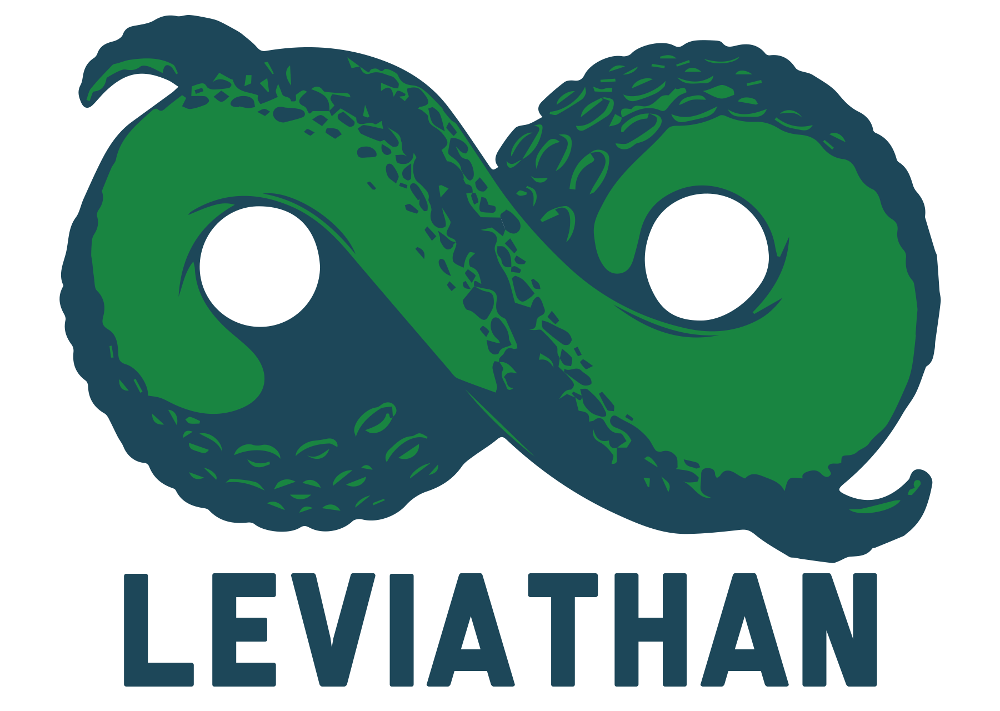

<div id="carousel-example-generic" class="carousel slide" data-ride="carousel">
  <ol class="carousel-indicators">
    <li data-target="#carousel-example-generic" data-slide-to="0" class="active"></li>
  </ol>

  <div class="carousel-inner" role="listbox">
    <div class="item active">
      
    </div>

    <!-- Controls -->
    <a class="left carousel-control" href="#carousel-example-generic" role="button" data-slide="prev">
      <span class="glyphicon glyphicon-chevron-left" aria-hidden="true"></span>
      <span class="sr-only">Previous</span>
    </a>
    <a class="right carousel-control" href="#carousel-example-generic" role="button" data-slide="next">
      <span class="glyphicon glyphicon-chevron-right" aria-hidden="true"></span>
      <span class="sr-only">Next</span>
    </a>
  </div>


  <section
     id    = "twitter-feed">
    <article class = "col-sm-12 center-block text-center">
      <a class="twitter-timeline"  href="https://twitter.com/Leviathandota" data-widget-id="593932641486970880">Tweets by @Leviathandota</a>
      <script>!function(d,s,id){var js,fjs=d.getElementsByTagName(s)[0],p=/^http:/.test(d.location)?'http':'https';if(!d.getElementById(id)){js=d.createElement(s);js.id=id;js.src=p+"://platform.twitter.com/widgets.js";fjs.parentNode.insertBefore(js,fjs);}}(document,"script","twitter-wjs");</script>
    </article>
  </section>
